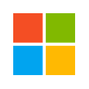

MSFTNASDAQ · Microsoft Corporation
Fair value (blend propio)
$540.66
vs. $507.12 mercado · +6.6%
POSTURA DEL ANÁLISIS: NEUTRAL CON SESGO CONSTRUCTIVO — EL NEGOCIO ACELERÓ MÁS QUE EL PRECIO, PERO LA CAJA SIGUE HIPOTECADA AL CAPEX — el blend propio queda 6.6% por encima del mercado tras el retroceso de la acción posterior al reporte del 28-oct-2026; el DCF Base, el único método que mira la caja, sigue muy por debajo porque el capex del año fiscal 2027 deja el flujo de caja libre económico en negativo (ver Sección 13)
Este documento es análisis independiente con fines informativos y educativos. El autor no es un asesor financiero registrado (no CFA / no matriculado ante la CNV/SEC) y este contenido no constituye una recomendación de compra, venta o mantenimiento para ningún lector en particular. Ver disclosure completo al pie.
Agents and Infra (Azure, Microsoft 365, Dynamics, GitHub, LinkedIn) · Devices and Consumer (Windows, Xbox, búsqueda, Surface) · Infraestructura de IA
Microsoft abrió el año fiscal 2027 (trimestre cerrado el 30-sep-2026, reportado el 28-oct-2026) con Azure
creciendo 48% interanual a $33.2 mil millones en un solo trimestre, el RPO comercial en $677 mil millones (+73%)
y un margen operativo de 49.8%, el más alto de los últimos ocho trimestres. La acción, sin embargo, cerró el
2-nov-2026 en $507.12, 4.5% por debajo del cierre previo al reporte: el capex del trimestre (incluyendo
arrendamientos financieros) llegó a $45.2 mil millones, la compañía salió a emitir su primer bono en nueve años
(~$25 mil millones) y OpenAI ya representa $10.0 mil millones de ingresos por trimestre, el 10.8% del total.
Este informe recorre el negocio completo —la nueva estructura de segmentos, el trimestre, el balance, los
comparables y los riesgos— y cierra, recién en la última sección, con la valuación: cuatro metodologías
independientes, ponderadas, sobre los mismos datos.
Var. ingresos (últ. trim.)
+18.8%
Margen operativo TTM
47.1%
Posición de caja neta
+$29.0B
01 — Resumen Ejecutivo
Azure a +48% y margen récord; el mercado eligió mirar el capex y el bono
El 28 de octubre de 2026, Microsoft reportó el primer trimestre del año fiscal 2027 (terminado el 30 de septiembre
de 2026): ingresos de $92.3 mil millones (+18.8% interanual), utilidad operativa de $45.9 mil millones (+21%) y
Microsoft Cloud en $63.9 mil millones, con el crecimiento acelerando a 30%. Azure —que por primera vez se informa
en dólares y no solo como tasa de crecimiento— facturó $33.2 mil millones en el trimestre, +48% interanual, contra
+43% en el trimestre de junio. Es el primer reporte bajo la nueva estructura de dos segmentos (Agents and Infra y
Devices and Consumer), anunciada en septiembre de 2026 y aplicada de forma retroactiva a los tres años fiscales
anteriores.
El resultado superó el consenso: EPS diluido de $4.92 GAAP y $4.89 ajustado por el impacto de las inversiones en
OpenAI (+18% interanual), contra una expectativa de $4.73 (LSEG); ingresos de $92.28 mil millones contra $90.69 mil
millones esperados. La guía para el trimestre de diciembre ubica los ingresos en $96.0-97.1 mil millones y Azure en
+49-50% a moneda constante. La acción, sin embargo, no premió el reporte: cerró el 29-oct-2026 prácticamente sin
cambios ($530.14) y cayó hasta $507.12 al cierre del 2-nov-2026, en una semana en la que Microsoft lanzó su primera
emisión de bonos en dólares desde 2017 y en la que el capex trimestral, que quedó por debajo de lo que esperaba el
mercado por demoras de proveedores, fue presentado como un gasto que se corre a la segunda mitad del año fiscal,
no como un gasto que se recorta.
Este informe actualiza el de julio de 2026 (blend de $478.19 contra un precio de $464.72). El negocio mejoró en
todos los frentes que el informe anterior marcaba como prueba pendiente: Azure aceleró, el margen operativo subió y
el flujo de caja operativo del trimestre ($58.0 mil millones) creció 29%. Lo que no cambió es la tensión central:
con el capex del año fiscal 2027, el DCF sigue arrojando flujo de caja libre económico negativo en el
primer año de proyección bajo los tres escenarios, mientras que comparables, reversión histórica y consenso
de Wall Street ubican el valor por encima del precio. La diferencia con julio es que ahora el precio quedó por
debajo del blend, no casi en paridad.
02 — Historia y Evolución
De Windows/Office a "cloud-first, AI-first": la segunda reinvención de Microsoft bajo Nadella
Microsoft fue fundada por Bill Gates y Paul Allen en 1975, y construyó su primera era de dominancia sobre MS-DOS y
Windows, consolidada con Office en los 90 y el caso antitrust de EE.UU. de 1998-2001 —que la obligó a moderar
prácticas de bundling pero no a dividirse— como el episodio regulatorio que definió a la compañía durante más de
una década, y que funciona como el precedente histórico más relevante para leer cualquier riesgo antitrust
sobre el bundling de Teams/Office (Sección 10). La década 2000-2010, bajo Steve Ballmer, quedó marcada por el
fracaso en anticipar la transición a mobile (Windows Phone nunca superó una fracción marginal de mercado frente a
iOS y Android) y por una acción que cotizó prácticamente plana durante casi 15 años pese al crecimiento del
negocio subyacente.
La segunda reinvención arrancó en febrero de 2014, cuando Satya Nadella asumió como CEO y declaró la estrategia
"mobile-first, cloud-first" — un giro que redirigió la inversión de la compañía hacia Azure (lanzado en 2010 pero
marginal hasta entonces) y hacia el modelo de suscripción (Office 365) en desmedro de las licencias perpetuas.
Esa estrategia se reforzó con una seguidilla de adquisiciones que son pilares del negocio: LinkedIn en 2016
($26.2 mil millones), GitHub en 2018 ($7.5 mil millones), y Activision Blizzard en 2023 ($68.7 mil millones, la
mayor adquisición en la historia de la industria de videojuegos). La inversión en OpenAI —iniciada con $1.000
millones en 2019 y escalada a un compromiso de $13.000 millones hacia 2023— es, en retrospectiva, la apuesta de
capital más rentable de la era Nadella: según el 10-Q del trimestre cerrado el 30-sep-2026, Microsoft tiene una
participación de aproximadamente 24% de OpenAI en base convertida (la dilución de las rondas posteriores la bajó
del 26.79% fijado en la recapitalización de octubre de 2025). A la valuación de $852.000 millones de la ronda de
marzo de 2026, esa participación vale unos $204.500 millones —más de 15 veces los $13.000 millones comprometidos— y
equivale a cerca del 5-6% de la capitalización bursátil de Microsoft al 2-nov-2026.
El dato que mejor resume la tensión central de este informe no es el crecimiento de ingresos — es el capex. En el
año fiscal 2016, Microsoft invirtió $8.3 mil millones en bienes de capital, apenas 9.2% de sus ingresos de ese
año. En el año fiscal 2026 invirtió $115.9 mil millones en efectivo (34.9% de los ingresos), y en el trimestre
cerrado el 30-sep-2026 el capex total, sumando los centros de datos tomados por arrendamiento financiero, llegó a
$45.2 mil millones: el 49% de los ingresos del trimestre. Es la mayor aceleración de intensidad de capital en la
historia de la compañía, y el dato que más pesa en la valuación de la Sección 13.
Ingresos anuales reportados, FY2016–FY2026 (año fiscal cerrado el 30 de junio de cada año). Fuente: SEC EDGAR XBRL, RevenueFromContractWithCustomerExcludingAssessedTax.
Los hitos de capitalización acompañan esta historia: Microsoft cruzó el $1 billón de valor de mercado en abril de
2019, los $2 billones en junio de 2021, y los $3 billones en enero de 2024 — validando la tesis Nadella de cloud +
productividad antes incluso del supercycle de IA generativa que arrancó con el lanzamiento público de ChatGPT en
noviembre de 2022 y que es el motor central del segmento Agents and Infra (Sección 03).
En paralelo, el retorno de capital a accionistas se sostuvo de forma mucho más moderada que en Apple: Microsoft
recompró $22.3 mil millones y pagó $26.4 mil millones en dividendos durante el año fiscal 2026 — una fracción del
capex del mismo período ($115.9 mil millones). A diferencia de Apple, que prioriza explícitamente recompras sobre
capex de IA (ver el informe de AAPL de este mismo desk), Microsoft invierte simultáneamente en ambos frentes,
financiado por un flujo de caja operativo de $182.9 mil millones en FY2026 — la clave para entender por qué el
capex del año fiscal 2027 no compromete la solvencia de la compañía, aunque sí comprime el free cash flow en el
corto plazo y, por primera vez en nueve años, la llevó a buscar financiamiento en el mercado de bonos (Sección 06).
03 — Modelo de Negocio y Segmentos
Qué vende Microsoft, y dónde: dos segmentos nuevos y Azure, por fin, en dólares
Desde el año fiscal 2027, Microsoft reporta dos segmentos en lugar de tres. Agents and Infra reúne
las aplicaciones y agentes (Microsoft 365 comercial, Dynamics, GitHub, LinkedIn), el sistema multi-modelo y la
infraestructura de Azure; Devices and Consumer agrupa la oferta de consumo (Windows OEM, Surface,
Xbox, búsqueda y publicidad, Microsoft 365 consumo). La compañía refiló el 28-oct-2026 un 8-K con los tres años
fiscales anteriores reexpresados bajo la nueva estructura, lo que permite comparar contra el mismo trimestre de
2025 sin saltos de perímetro. El cambio no es cosmético: deja a la vista que el 83% de los ingresos, y casi el 90%
de la utilidad operativa, ya dependen del negocio enterprise y de IA.
Ingresos por segmento, Q1 FY2027 (trimestre cerrado 30-sep-2026), miles de millones USD.
La novedad más útil para el análisis es que Azure dejó de ser solo una tasa de crecimiento: el comunicado informa
ingresos por línea de producto, y Azure facturó $33.17 mil millones en el trimestre (36% del total de la compañía),
contra $22.38 mil millones un año antes. En los últimos doce meses, Azure suma $112.7 mil millones. Microsoft 365
cloud (comercial y consumo) aportó $27.78 mil millones (+17%), con el comercial creciendo 18% ajustado por un efecto
de reconocimiento de ingresos del año anterior. Del lado débil, Windows OEM y dispositivos cayó 22% y la guía del
trimestre de diciembre anticipa una caída de alrededor de 35%; Xbox retrocedió 2%. Búsqueda y publicidad, en cambio,
creció 12% sin contar costos de adquisición de tráfico.
Ingresos por línea de producto, Q1 FY2027, miles de millones USD. Fuente: 8-K del 28-oct-2026.
Un dato del 10-Q obliga a leer el crecimiento de Azure con un matiz: en el trimestre, Microsoft reconoció
$10.0 mil millones de ingresos por acuerdos comerciales con OpenAI (incluidos los pagos de
revenue-sharing), el 10.8% de los ingresos totales, y la cuenta a cobrar con OpenAI subió de $6.0 a $7.2 mil
millones. OpenAI es, a la vez, cliente, socio y una inversión contabilizada por el método de la participación. No
hay nada irregular en eso, pero sí una concentración de cliente que el informe de julio no podía cuantificar y que
ahora entra al Registro de Riesgos (Sección 10).
04 — Desarrollos Recientes y Perspectiva
Cuatro frentes que van a definir los próximos trimestres
El capex: un trimestre por debajo de lo esperado, corrido a la segunda mitad del año
El capex del trimestre fue de $45.2 mil millones incluyendo arrendamientos financieros ($39.4 mil millones pagados
en efectivo por propiedad y equipo, el doble que un año antes). Quedó por debajo de los más de $50 mil millones que
esperaba el mercado (StreetAccount): la CFO Amy Hood lo atribuyó a que "algunas entregas de capacidad de terceros que
esperábamos en el primer trimestre se demoraron", y anticipó que el gasto se acelera en la segunda mitad del año
fiscal. Para el trimestre de diciembre guio un capex de más de $50 mil millones.
La cifra de "alrededor de $170 mil millones" que circuló en la cobertura de prensa merece una aclaración, porque
las fuentes secundarias no coinciden en el período. La aritmética del propio año fiscal la descarta como guía
anual de FY2027: con $45.2 mil millones en el primer trimestre, más de $50 mil millones en el segundo y una
aceleración anunciada para la segunda mitad, el año fiscal termina muy por encima de $170 mil millones. En cambio,
la suma de los cuatro trimestres del año calendario 2026 (cerca de $35 mil millones en enero-marzo, $41 mil
millones en abril-junio, $45.2 mil millones en julio-septiembre y más de $50 mil millones en octubre-diciembre) da
ese orden de magnitud. Este informe la toma, por lo tanto, como cifra de año calendario 2026, y mantiene como
referencia para el año fiscal 2027 la guía de $255-260 mil millones dada en julio, que la compañía no actualizó en
el comunicado.
Primera emisión de bonos desde 2017
El 29-oct-2026, al día siguiente del reporte, Microsoft lanzó una emisión de bonos en dólares con grado de
inversión —según Bloomberg y Reuters, de unos $25 mil millones en hasta diez tramos de 2 a 40 años, con órdenes
que, según reportes de prensa no confirmados por la compañía, superaron los $100 mil millones—, la primera desde los $17 mil millones de 2017. Los suplementos de prospecto
(424B2) fueron presentados ante la SEC entre el 29-oct y el 2-nov-2026; el destino declarado es uso corporativo
general, incluido el capex de IA y nube. Hood había dicho en la llamada que la compañía espera mantener el flujo de
caja libre positivo durante el año fiscal y que consideraría otras fuentes de financiamiento si resultaran
atractivas. La emisión no cambia la solvencia (Sección 06), pero sí el relato: Microsoft dejó de financiar la
carrera de IA solo con caja propia.
OpenAI: cliente del 10.8% de los ingresos, 24% de la propiedad
El acuerdo renegociado con OpenAI en 2025-2026 eliminó la exclusividad de Azure como proveedor de cómputo a
cambio de un compromiso de OpenAI de consumir $250 mil millones adicionales en Azure. En el trimestre, el impacto
no operativo de la inversión en OpenAI fue una ganancia neta de $272 millones antes de impuestos ($207 millones
después de impuestos, $0.03 por acción), contra una pérdida de $4.1 mil millones un año antes. La concentración
de ingresos (Sección 03) y la participación (Sección 02) hacen de OpenAI la variable individual más importante
del informe después del capex.
Copilot y la demanda contratada
Microsoft no actualizó el número de asientos pagos de Microsoft 365 Copilot (el último dato publicado, de julio de
2026, era de 30 millones). Sí informó que los usuarios diarios de Copilot crecieron casi 50% contra el trimestre de
junio y más de cinco veces interanual, y que los clientes con más de 50.000 asientos se multiplicaron por más de
ocho. El RPO comercial llegó a $677 mil millones (+73%), con una duración promedio ponderada de 2.3 años; la
compañía espera reconocer cerca del 30% en los próximos doce meses. Las nuevas contrataciones (bookings) cayeron
12% contra un trimestre del año anterior que incluía un compromiso grande de Azure.
05 — Estados Financieros
Los últimos dos trimestres reportados, línea por línea
El crecimiento de ingresos se aceleró de 17.7% en el trimestre de junio a 18.8% en el de septiembre, y el margen
operativo saltó de 45.1% a 49.8%. Dos factores explican el salto: los gastos operativos crecieron apenas 6%
interanual (contra +19% de ingresos), y el margen bruto se recuperó a 67.8% pese a la mayor depreciación de los
centros de datos. Hay un tercer factor que conviene no olvidar: en el trimestre de junio, la compañía anunció que
extendía la vida útil estimada de edificios de centros de datos y oficinas de 15 a 25 años, lo que reduce la
depreciación anual registrada. Es un cambio contable legítimo, pero parte de la mejora de margen proviene de
ahí y no de la operación.
La utilidad neta GAAP creció 32% interanual contra 18% de la ajustada, pero esta vez por el efecto contrario al de
trimestres anteriores: el trimestre de septiembre de 2025 había cargado una pérdida de $4.1 mil millones por OpenAI,
que infla la comparación. Sin ese efecto, el EPS creció 18% (19% a moneda constante), en línea con los ingresos. La
serie ajustada es la que usa este informe para la reversión histórica (Sección 13), porque el EPS GAAP de los
últimos doce meses ($19.16) incluye una ganancia extraordinaria de OpenAI en el trimestre de diciembre de 2025.
Margen bruto y margen operativo trimestral, últimos 8 trimestres reportados (Q2 FY25 a Q1 FY27). Fuente: SEC EDGAR XBRL / 8-K.
06 — Deuda y Balance
Caja neta todavía positiva, pero con arrendamientos que ya pesan como deuda
Con la definición que usa este desk (caja e inversiones de corto plazo menos deuda financiera), Microsoft sigue
con caja neta positiva: $29.0 mil millones, contra $36.5 mil millones en junio. La caída se explica por el
capex y por la cancelación de $4.85 mil millones de deuda en el trimestre. La emisión de bonos de fines de octubre
(Sección 04) es posterior al cierre: suma caja y deuda en montos parecidos, de modo que no cambia la posición
neta.
Lo que sí cambió es el peso de los arrendamientos. Los pasivos por arrendamientos financieros, en su mayoría
centros de datos, ya suman $71.0 mil millones, el doble de la deuda financiera, y la compañía tiene firmados otros
$364.6 mil millones de arrendamientos que todavía no comenzaron. Si se cuentan los arrendamientos financieros como
deuda, la posición neta pasa a ser de unos $42 mil millones de deuda neta. Sigue siendo un apalancamiento bajo
frente a un EBITDA anual que supera los $200 mil millones, pero el balance ya no es el de una compañía con "caja de
sobra": es el de una compañía que financia su infraestructura con caja, arrendamientos y, desde octubre, bonos.
07 — Flujo de Caja y Capital Allocation
El flujo operativo crece 29%; el capex, más del doble
El flujo de caja libre en efectivo siguió positivo en el trimestre ($18.6 mil millones), pero cayó 27% interanual
aun con un OCF que creció 29%. El margen de OCF del trimestre (62.9%) está estacionalmente inflado por la cobranza
de las renovaciones de junio (las cuentas a cobrar bajaron $17.1 mil millones); en doce meses, el margen es 56.5%,
y es ese el que usa el DCF como ancla. La distinción entre capex en efectivo y capex total importa para leer la
promesa de Hood de "mantener el flujo de caja libre positivo": se refiere a la caja; si se suman los centros de
datos tomados por arrendamiento financiero, el flujo libre económico del año fiscal 2027 queda negativo en nuestro
modelo (Sección 13).
Las recompras del trimestre ($4.4 mil millones) fueron las más bajas en dos años: el retorno al accionista se
sostiene por el dividendo, mientras el capex absorbe todo el crecimiento incremental de la caja.
Capex del año calendario 2026 por compañía (piso del rango cuando hay rango). Escala logarítmica.
En año calendario, Microsoft invierte menos que Alphabet y Amazon. La diferencia está en la intensidad: con
ingresos menores que los de Amazon, el capex de Microsoft ya representa casi la mitad de lo que factura cada
trimestre, y su RPO comercial ($677 mil millones) es la respuesta que da la compañía a la pregunta de si esa
capacidad tiene demanda detrás.
08 — Comparables de Industria
MSFT frente a las otras cuatro "mega caps" de tecnología
Microsoft comparte inversores, capital y la narrativa de infraestructura de IA con otras cuatro compañías de
mega-capitalización. AWS (Amazon) y Google Cloud son sus competidores directos en nube; Meta y Apple compiten más
por el mismo capital de inversores que por el mismo negocio. Todas reportaron entre el 28 y el 30 de octubre de
2026, y el mercado castigó a casi todas por la misma razón: el capex.
P/E forward comparado. Tras la baja de la semana del reporte, MSFT cotiza prácticamente en el promedio del panel.
Apple (AAPL) — no correr la carrera de capex y cotizar más caro por eso
Apple es el espejo invertido de la estrategia de Microsoft: invierte ~$13-14 mil millones de capex anual, menos
del 3% de sus ingresos, prioriza las recompras y cotiza al múltiplo forward más alto del panel (34.6x). La lectura
conjunta de ambos informes de este desk sigue siendo el contraste más informativo de la cobertura: el mercado le
paga una prima a Apple por no gastar.
Alphabet (GOOGL) — el caso que muestra cómo castiga el mercado
Alphabet cayó 12.6% el 29-oct-2026 tras un trimestre con el negocio acelerando y el flujo de caja libre negativo
por segundo trimestre consecutivo, y con un capex 2027 anticipado como "significativamente" mayor sin cifra. Es la
referencia más cercana a lo que podría pasarle a Microsoft si el capex de la segunda mitad del año fiscal no se
traduce en Azure sostenido por encima de 45%. La diferencia es de caja: Microsoft todavía genera flujo libre
positivo en efectivo; Alphabet, no.
Meta (META) — publicidad financiando el capex
Meta financia una guía de capex de $125-145 mil millones con el negocio publicitario, mientras Reality Labs sigue
perdiendo cerca de $19 mil millones al año. Cotiza al múltiplo forward más bajo del panel, reflejo del riesgo de
sostener dos apuestas de capital a la vez.
Amazon (AMZN) — AWS contra Azure
Amazon combina un comercio electrónico maduro con AWS, el rival directo de Azure. Con un capex 2026 de más de $200
mil millones según el consenso, cotiza a 24.8x, prácticamente el mismo múltiplo que Microsoft.
En julio, la suba posterior al reporte había llevado a Microsoft por encima de Meta y Alphabet en múltiplo. Con
la baja de fines de octubre, MSFT volvió a cotizar en el promedio del panel (24.0x contra 24.3x), con un
crecimiento de ingresos (+19%) y un margen operativo (49.8%) que ningún otro integrante del panel alcanza. El mercado ya no le
cobra prima por la calidad: la descuenta por la intensidad de capital.
09 — Gobierno Corporativo y Estructura Accionaria
Quién controla la compañía, y cómo se paga a quien la dirige
Microsoft es una empresa de propiedad institucional predominante: Bill Gates redujo su participación de forma
sostenida durante dos décadas (menos del 1%) y Satya Nadella, como el resto del management, posee una fracción
mínima del capital. Las decisiones de capital allocation (Sección 07) —duplicar el capex sin acelerar recompras y
volver al mercado de bonos— responden a un directorio que rinde cuentas a accionistas institucionales, no a un
fundador-controlador. El proxy statement presentado el 21-oct-2026 convoca a la asamblea anual del 8-dic-2026.
Ownership institucional
~65-70%
Vanguard (~9.6%) y BlackRock (~8.1%) son los dos mayores accionistas individuales — juntos superan el 17% del capital.
Ownership insider
~0.02%
Satya Nadella posee cerca de 900.000 acciones, ~0.01% de la compañía — el mayor tenedor individual entre los ejecutivos actuales.
Directorio
Cambios en dic-2026
Reid Hoffman y Hugh Johnston (presidente del Comité de Auditoría) no buscan la reelección; el directorio propone a John Collison, cofundador de Stripe, como nuevo miembro desde el 8-dic-2026.
Compensación CEO (FY2026)
$90.6M
Satya Nadella: $2.5M salario + $77.6M en acciones + $10.3M de incentivo en efectivo + $0.3M otros. −6% vs. FY2025 ($96.5M).
Participación en OpenAI
~24% · ~$204.5B
Interés aproximado en base convertida según el 10-Q de sep-2026, a la valuación de $852.000M de la ronda de marzo-2026. Contabilizada por el método de la participación, no a valor de mercado.
CEO / Chairman
Satya Nadella
CEO desde feb-2014 y chairman desde 2021. Sin sucesión de liderazgo en curso.
La compensación de Nadella bajó 6% en el año fiscal 2026, con una porción mayor del incentivo en efectivo y
menor en acciones. La salida de Hugh Johnston, que presidía el Comité de Auditoría, es el cambio de gobierno más
relevante para el lector de este informe: es el comité que supervisa las decisiones contables que más pesan en la
tesis (vida útil de los centros de datos, tratamiento de arrendamientos, contabilidad de OpenAI). La ausencia de
una transición de CEO reduce un vector de riesgo de ejecución, pero también deja la responsabilidad por el capex
de este ciclo enteramente sobre un management con doce años de historial.
10 — Registro de Riesgos
Qué podría cambiar esta lectura
11 — Catalizadores
Agenda de eventos relevantes
12 — Modelo Financiero Proyectado y Momentum de Estimados
Cómo vino el consenso contra lo reportado el 28-oct-2026, y qué espera para FY2027 y FY2028
EPS diluido ajustado: consenso pre-reporte vs. resultado real del trimestre. Fuente: LSEG y 8-K del 28-oct-2026.
El informe de julio advertía que el consenso de EPS FY2027 disponible entonces ($16.71) estaba desactualizado. La
revisión ocurrió: el consenso actual es de $20.01, un 20% más alto, y el de FY2028, de $24.20. Tras el reporte,
varias casas subieron sus precios objetivo (Citigroup a $680, Bernstein a $722, Scotiabank y DA Davidson a $650,
KeyBanc y Cantor a $630, Barclays a $610). No contamos con la serie diaria de revisiones de los últimos 90 días; el
momentum que reportamos se basa en el salto del consenso anual y en los cambios de precio objetivo posteriores al
reporte.
13 — Valuación: Cuatro Métodos y el Fair Value
Cuánto vale la acción, mirado desde cuatro ángulos distintos
Llegamos a la valuación después de recorrer el negocio completo a propósito. Calculamos el valor razonable con
cuatro enfoques independientes —flujo de caja descontado, múltiplos de comparables, reversión a la media histórica
propia y consenso de Wall Street— y los combinamos con la ponderación que usa este desk desde septiembre de 2026
(15% / 25% / 35% / 25%), que reemplaza al promedio simple del informe de julio. El cambio se explica en la síntesis.
Método 1 — Flujo de caja descontado (DCF), tres escenarios
Modelo a dos etapas (cinco años fiscales explícitos, FY2027 a FY2031, más valor terminal por crecimiento perpetuo),
partiendo de los ingresos de FY2026 ($331.84 mil millones), con la caja neta y las acciones diluidas del cierre de
septiembre de 2026 (Sección 06). Proyectamos el flujo de caja operativo y el capex por separado. El margen de OCF
del año 1 del caso Base (56%) está anclado en el OCF real de los últimos doce meses (56.5% de los ingresos), no en
el margen operativo; el capex del año 1 es el capex total, con arrendamientos financieros, porque un centro de
datos arrendado es inversión aunque se pague en cuotas. Para el Base y el Bull usamos $245 mil millones (primer
semestre de ~$96 mil millones entre lo reportado y lo guiado, y una segunda mitad acelerada); para el Bear, $258
mil millones, el centro de la guía de julio. El ingreso del año 1 del Base ($394.9 mil millones) coincide con el
consenso FY2027 ($395.8 mil millones). WACC: tasa libre de riesgo del Treasury a 10 años más un premio de riesgo
de 5.0% con beta cercano a 0.95.
Igual que en julio, el flujo de caja libre del año 1 es negativo en los tres escenarios, aunque
menos que entonces (−$23.9 mil millones en el Base, contra −$41.9 mil millones en julio) porque el OCF real vino
más fuerte y el capex del primer trimestre, más bajo. Entre 88% y 91% del valor de empresa viene del valor
terminal: el modelo depende de que la intensidad de capital baje en los años 2 a 5, no lo garantiza. En el Bear,
el margen de OCF no mejora (se queda en el 55% de FY2026) por el riesgo de concentración en OpenAI documentado en
la Sección 10, y el capex baja más lento; el Bear no hace retroceder el margen por debajo del nivel ya alcanzado.
Chequeo de sesgo. El DCF Base queda 35% por debajo del precio. Antes de aceptarlo como hallazgo,
revisamos los tres supuestos que suelen generar ese sesgo: el margen de OCF del año 1 está en el nivel real de los
últimos doce meses; el capex del año 1 sale de lo reportado y guiado por la compañía; el ingreso del año 1 es el
del consenso. La brecha, por lo tanto, no es un error de calibración: es la distancia entre lo que la caja permite
justificar con supuestos razonables y lo que el mercado paga. El DCF inverso lo traduce a una cifra: con el mismo
crecimiento, margen, WACC y crecimiento terminal del Base, el precio de mercado exige que el capex baje de forma
lineal hasta cerca del 14% de los ingresos en FY2031, la mitad del 28% que supone nuestro Base y un nivel que
Microsoft no ve desde FY2023.
Sensibilidad del caso Base: WACC × crecimiento terminal
A diferencia de julio, ninguna celda de la grilla alcanza el precio de mercado ($507.12): la combinación más
optimista (WACC 8.0%, g 4.0%) da $499.87. El DCF, solo, no justifica el precio.
Participación en OpenAI. El DCF valúa solo el flujo del negocio operativo. La participación de
~24% en OpenAI (Sección 09) tiene un valor de mercado verificable en la ronda de marzo de 2026: $204.48 mil millones,
o $27.46 por acción sobre 7,446 millones de acciones diluidas. La sumamos al DCF Base como ajuste
de NAV: $357.88. En julio el ajuste era de $30.64, con una participación de 26.79%; la baja refleja
la dilución informada en el 10-Q, no un cambio en la valuación de OpenAI.
Método 2 — Múltiplos de comparables
Aplicamos el P/E forward promedio de los cuatro comparables de la Sección 08 (24.3x) sobre el EPS de los próximos
doce meses de Microsoft ($21.17). En julio se usaba el consenso FY2027 desactualizado ($16.71); el cambio de base es
la razón principal de la suba de este método.
Método 3 — Reversión a la media histórica propia
El P/E promedio de MSFT de los últimos 5 años es 32.05x y el de 10 años, 31.66x (financecharts.com, fullratio.com,
GuruFocus). Siguiendo la regla de ventana limpia del desk, los aplicamos al EPS ajustado de los últimos doce meses
($17.96), que excluye las ganancias y pérdidas de OpenAI que distorsionan el EPS GAAP ($19.16). Es un criterio más
exigente que el de julio, que aplicaba el múltiplo histórico sobre un EPS forward.
Al 2-nov-2026, la acción cotiza a 28.2x su EPS ajustado de doce meses, un 11% por debajo de su promedio histórico.
Método 4 — Consenso de Wall Street
Síntesis: los cuatro métodos, ponderados
"Football field" de valuación — rango bajo/alto de cada metodología. La línea roja marca el precio de mercado ($507.12); la azul, el blend propio ($540.66).
El blend ponderado da $540.66 por acción, 6.6% por encima del cierre de $507.12. Contra julio
($478.19), la suba se explica por tres cosas, en este orden: el consenso de EPS se revisó 20% al alza y eso
arrastró a comparables; los precios objetivo de Wall Street subieron de $555.77 a $633.13; y el desk cambió el
promedio simple por la ponderación 15/25/35/25. Con el promedio simple de julio, el blend sería $519.23 (+2.4%).
El DCF Base bajó (de $351.32 a $330.42) porque el precio ya no lo empuja nadie: sale de la caja, y la caja del
año fiscal 2027 sigue comprometida.
La postura es neutral con sesgo constructivo. Al cierre del trimestre de septiembre de 2026, Microsoft es un negocio mejor que en julio
—Azure más rápido, margen más alto, demanda contratada de $677 mil millones— y la acción cotiza más barata que
entonces en múltiplo. Pero tres de los cuatro métodos que la ubican por encima del precio son relativos (al panel,
a su propia historia, a la opinión de los analistas), y el único que mira la caja la ubica muy por debajo. Para que
el precio actual tenga pleno sentido, el capex tiene que empezar a bajar como proporción de los ingresos a partir
del año fiscal 2028 y la dependencia de OpenAI tiene que diluirse, no crecer. El reporte de fines de enero de 2027,
con el capex de la segunda mitad del año fiscal, es la primera prueba.
14 — Limitaciones del Modelo
Qué asume este análisis, y dónde puede fallar
Entre 88% y 91% del valor de empresa en los tres escenarios del DCF proviene del valor terminal, porque el flujo
de caja libre económico del año 1 es negativo en los tres; el modelo depende de que el capex se normalice en los
años 2-5 tal como se supone. La guía de capex del año fiscal 2027 no tiene una cifra oficial actualizada: este
informe usa $245 mil millones (Base/Bull) y $258 mil millones (Bear), y trata los ~$170 mil millones citados en la
prensa como cifra de año calendario 2026 por la aritmética de la Sección 04; si la compañía aclarara que se trata
del año fiscal, el flujo libre del año 1 pasaría a ser positivo y el DCF Base subiría. El EPS ajustado del Q3
FY2026 (~$4.19) está derivado del crecimiento informado por la compañía, no tomado de una cifra publicada, con un
margen de error de un centavo. El P/E forward de META es una aproximación propia y el de los pares está tomado al
30-oct-2026 y ajustado por precio. La participación en OpenAI se valúa a la ronda de marzo de 2026: no incorpora
las conversaciones de una nueva ronda a mayor valuación, ni descuentos por iliquidez o por la preferencia de
liquidación. Los arrendamientos financieros se tratan como capex en el DCF pero no como deuda en la caja neta;
contarlos también como deuda sería contarlos dos veces. Finalmente, no tenemos datos granulares de revisión de
estimados de los últimos 90 días: el momentum de la Sección 12 se basa en el cambio del consenso anual y en los
precios objetivo posteriores al reporte.
Documento elaborado a partir de fuentes públicas: SEC EDGAR (Form 8-K Exhibit 99.1, 8-K de reexpresión de
segmentos, 10-Q, 10-K, DEF 14A, 424B2, XBRL companyfacts API), comunicados de resultados de Microsoft, Apple,
Alphabet, Meta y Amazon, stockanalysis.com, LSEG y StreetAccount vía CNBC, GuruFocus, fullratio.com,
financecharts.com, BigGo Finance, Data Studios, investingLive, Directions on Microsoft, Reuters, Bloomberg, Benzinga
y revenuememo.com. Cifras fundamentales con fecha de corte en el Form 8-K y el 10-Q de Microsoft correspondientes al
trimestre cerrado el 30 de septiembre de 2026, publicados el 28 de octubre de 2026; precios de mercado al cierre del
2 de noviembre de 2026.
Sobre el autor y la naturaleza de este documento: este informe es un análisis independiente
elaborado por Manfredi Investment Research & Markets con fines exclusivamente informativos y educativos. El
autor no es un asesor de inversión registrado, no está matriculado ante la Comisión Nacional de Valores (CNV), la
SEC, ni ningún otro organismo regulador equivalente, y no mantiene una relación de asesoramiento financiero
personalizado con el lector. Ninguna cifra de este documento —incluido el "fair value" de portada, los escenarios
de DCF, ni la síntesis de la Sección 13— constituye una recomendación de compra, venta o mantenimiento para
ningún lector en particular, ni considera la situación financiera, los objetivos o el perfil de riesgo individual
de quien lo lee. Los escenarios de DCF son estimaciones propias sujetas a los supuestos declarados explícitamente
en la Sección 13, y no representan guidance oficial de ninguna de las compañías mencionadas salvo donde se cita
de forma directa y atribuida. Verificar cifras contra el 10-Q/10-K/8-K más reciente de cada compañía, y consultar
a un asesor financiero matriculado, antes de tomar cualquier decisión de inversión.